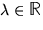
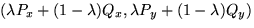
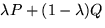
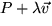
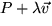
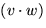
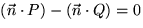
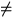
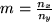
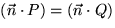

Hi ha diverses maneres d'especificar una recta al pla. Serà necessari que les recordem, i que sapiguem convertir d'una representació a una altra.
Una manera de representar una recta és mitjançant dos punts, i per tant mitjançant quatre reals. Si els dos punts són P=(Px, Py) i Q=(Qx, Qy), aleshores per cada , el punt de coordenades  pertany a la recta. (Sovint necessitarem descriure una operació semblant sobre cada una de les components d'una tupla, com en aquesta darrera fórmula. Usarem doncs la notació abreujada  entenent per aquesta el mateix que a l'equació anterior.)
Si limitem  a prendre valors en [0,1] obtindrem sols els
punts del segment que uneix a P i Q.
A aquesta formulació li direm equació paramètrica de la recta, perquè
ens dóna una forma d'obtenir diferents punts de la recta (o del
segment) donant diferents valors a un paràmetre (
a prendre valors en [0,1] obtindrem sols els
punts del segment que uneix a P i Q.
A aquesta formulació li direm equació paramètrica de la recta, perquè
ens dóna una forma d'obtenir diferents punts de la recta (o del
segment) donant diferents valors a un paràmetre ( ). Però no és
l'única formulació paramètrica. Podem obtenir una altra si descrivim
la recta a partir d'un punt de pas P i un vector direcció
). Però no és
l'única formulació paramètrica. Podem obtenir una altra si descrivim
la recta a partir d'un punt de pas P i un vector direcció
 : els punts de la recta s'obtenen aleshores substituint diferents
valors reals per
: els punts de la recta s'obtenen aleshores substituint diferents
valors reals per  a  (on com hem dit abans
repetim les mateixes operacions sobre les diferents components).
a  (on com hem dit abans
repetim les mateixes operacions sobre les diferents components).
D'una altra banda, qualsevol funció afí definida al pla defineix al seu torn una recta (aquella dels punts que són zeros de la funció). Aquesta és l'equació implícita de la recta: nx x+ ny y+ c=0, on (nx, ny) és un vector perpendicular a la recta.
Recordem l'operació de producte escalar. Donats dos vectors v i w, el producte escalar  és vx wx+ vy wy. Per tant si P és un punt pel que passa la recta, i si denotem per P també el vector posició de P (és a dir P-(0,0)), aleshores tot punt Q de la recta satisfà (reescrivint la fórmula implícita que tot just hem introduït usant ara productes escalars) .
Finalment, si la recta no és paral·lela al segon eix de coordenades, aleshores ny 0, i podem aïllar y a l'equació implícita per a obtenir-ne una d'explícita: y=m x+b, on  denota la pendent de la recta (la tangent de l'angle que forma amb el primer eix de coordenades), i b denota l'ordenada en que la recta talla al segon eix de coordenades (dita també ordenada a l'origen).
Resumint, hem vist les següents formes d'expressar una recta:
| Dades | Tipus | Fórmula |
|---|---|---|
| Per dos punts P i Q | Paramètrica | |
| Per un punt P i amb una direcció | Paramètrica | |
| Punt P i direcció normal |
Implícita |  |
| Pendent m i ordenada a l'origen b | Explícita | y=mx+b |